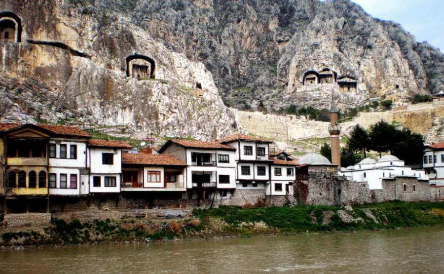

ÜYE OL
GİRİŞ YAP
...
AMASYA EVLERİ
Amasya kent dokusunun çeşitli yerlerinde, özellikle Yeşilırmak sahil şeridinde görsel bir şekilde yer almakta olan geleneksel Osmanlı Evi örnekleri Amasya mimarî yapıları içerisinde önemli bir grup teşkil etmektedir.
Amasya evleri, daha çok 19. yüzyıla ait olup, 2863 sayılı Kültür ve Tabiat Varlıklarını Koruma Kanunu'na istinaden Ankara Kültür ve Tabiat Varlıklarını Koruma Kurulu’nun 05.05.1992 gün ve 2364 sayılı kararı ile tescil edilerek koruma altına alınmışlardır.
Bu konutlar, Hımış ve Bağdadî teknikle yapılmış örneklerdir. Genellikle yan yana, bitişik nizâm olarak düzenlenmiş olan bu konut mimarisinin güzel örneklerini Yalıboyu Evleri olarak bilinen konut dokusu oluşturmaktadır.
Yeşilırmak kenarında, tarihi sur duvarı üzerine, ahşap çatkı arası kerpiç dolgulu olarak, kırma ya da beşik çatı üzeri oluklu kiremitle örtülü bir biçimde düzenlenmiş olan ve geleneksel Osmanlı evinin bütün özelliklerini bünyesinde taşıyan bu evler Amasya’nın tarihsel kimliğiyle uyumlu bir görünüm arz etmektedir.
Evler, bodrum üzeri tek kat ya da iki katlı olarak düzenlenmişlerdir. Bazı uygulamalarda birinci kat üzerinde bazı uygulamalarda ise ikinci kat üzerinde köşk olarak bilinen şahniş yer almaktadır. Genellikle avlulu ve bahçelidir. Özellikle haremlik ve selamlık tarzda düzenlenmiş örneklerde bahçe ortada kalmakta ve konutlar dışa kapalı bir görünüm almaktadır. Bu dışa kapalılık diğer konutlarda bazen yüksek bir bahçe duvarı nedeniyle karşımıza çıkmaktadır.
Konutların ikinci kat uygulamaları genellikle dışa taşkın, cumbalı olarak yapılmakta ve bu sayede hem evin plânında bir simetri oluşmakta hem de daha fazla yer kazanmak söz konusu olabilmektedir. Özellikle Yalı boyunda tarihi sur duvarı üzerine yapılmış olan konutlarda bu durumu çarpıcı bir şekilde görmemiz olasıdır. Buradaki konut dokusu, eliböğründelerle desteklenerek dışa taşırılmış ve böylece evlerin iç mekanlarında bir genişleme meydana gelerek mekan kazanımı sağlanmıştır.
Taşıntılar sayesinde daha çok dışa açık, geniş ve aydınlık olan ikinci katlar, alt katlara oranla daha fazla pencere uygulamasına olanak vermiştir. Pencereler daha çok giyotin pencere tarzında ele alınmış ve üçlü gruplar halinde düzenlenmiştir. Pencere önlerinde, dışarıdan bakıldığında içerinin görülmesini engelleyen ahşap kafeslikler görülür. Günlük yaşam evlerin iç mekanında, sofa (hayat) etrafında biçimlenen odalar içerisinde geçmektedir. Bu odalarda genellikle ocak, şerbetlik, yüklük (gömme dolap), raf ve sedir gibi işlevsel birimler bulunmaktadır. Ayrıca birkaç örnek dışında evlerde bağımsız bir gusülhane bulunmadığı için de bazı odalarda büyük ve geniş olarak düzenlenmiş olan yüklükler gusülhane (banyo) olarak değerlendirilmiştir. Odalar içerisinde yer alan bütün bu birimler günlük yaşamın ayrılmaz birer parçasıdırlar.
TUR PROGRAMLARI ve ARAÇ KİRALAMA seçenekleri için tıklayınız...
YOL DURUMU
HAVA DURUMU